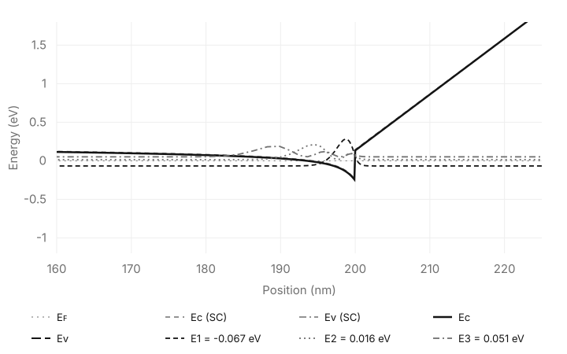
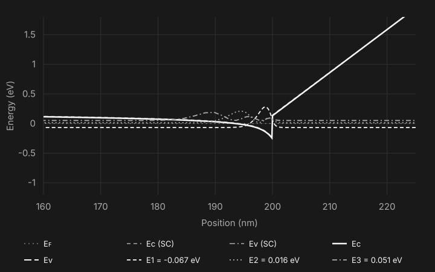

Nitride physics.In your hands.
A Python simulation framework for nitride semiconductor research, designed to let you inspect and modify the physics. Explore band structures and carrier behavior in the demo.
AlGaN/GaN HEMT
Band structure and quantum confined states at the AlGaN/GaN interface. Explore electron density and PN diode characteristics in the demo.
Explore the results

Understand. Adapt. Explore.
A framework designed around the questions you want to ask, and the physics you want to investigate.
Physics you can inspect.
The framework is designed to make physical models, assumptions, and numerical methods accessible and editable, so you can adapt them to your research. The source code is currently private during a major refactor.
Built around nitrides.
Spontaneous and piezoelectric polarization, strain-dependent band offsets, and quantum confinement in GaN/AlN/InN systems. See the AlGaN/GaN interface in the demo.
A Python research workflow.
Define structures and material parameters in Python, control simulation conditions, and take results into analysis and visualization with the scientific Python ecosystem.
Working with LLMs.
Making it easier to work with LLMs is a future direction for Semisolve. Dedicated LLM integration is not currently available.
Rebuilding the foundations.
Semisolve is undergoing a major refactor, including performance improvements. The source code remains private, and no public release date has been set.
Available to explore
The path to release
- Performance & foundationsA major refactor focused on performance and the framework as a whole.
- Validation & documentationValidate the revised implementation and prepare documentation and examples.
- Public releasePublish on GitHub and PyPI. The release date has not been set.
Apache License 2.0
Planned release under Apache License 2.0
We plan to publish Semisolve under Apache License 2.0. The source code is currently private while the framework undergoes a major refactor.
The framework is developed from physical theories described in academic papers and textbooks. Open-source publication is part of our plan to make the implementation available for examination and adaptation.
Get in touch
For inquiries about the project or potential collaborations, reach out via GitHub or Email.